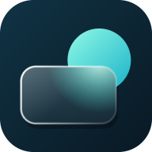
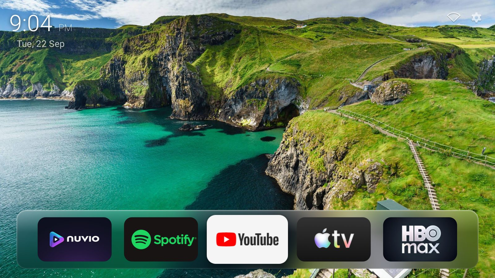
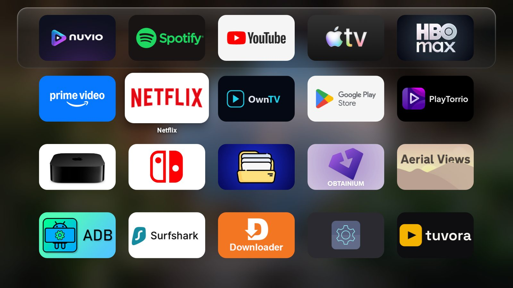
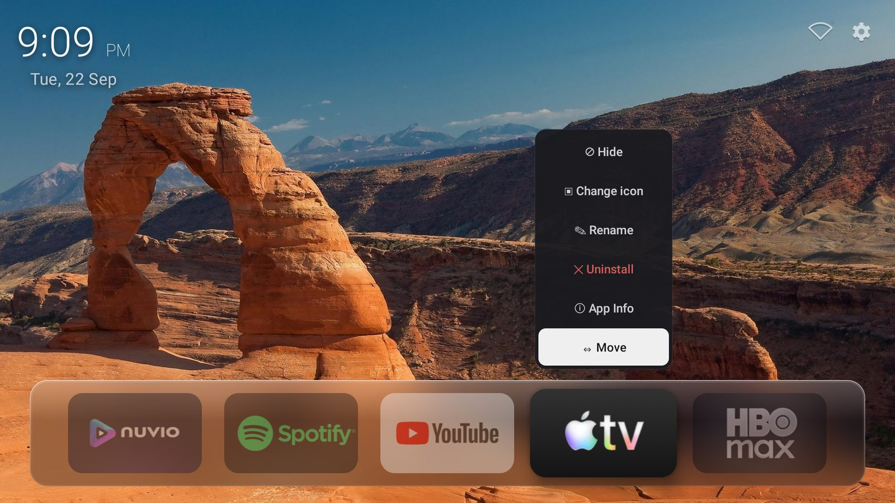
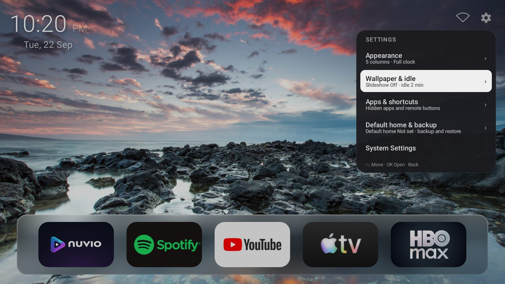

Your TV,
without the noise.
Glass is a small home screen that shows your wallpaper, a clock, and the apps you pick. No ads, no recommendations, no tracking.

- 182 KBThe whole app
- 0Ads, trackers or accounts
- 0Network requests in normal use
- 8.0+Android version needed
Everything a home screen needs.
Nothing it doesn't.
Press Home, pick an app, and get back to watching. Everything else stays out of sight until you want it.

Favorites up top, every app one press away
Keep the apps you use most on the glass shelf. Press down for the full grid, and reorder or hide anything with the remote.
Make each app yours
Long-press to rename it, change its artwork, move it, hide it, or uninstall it.
Your layout
4 to 7 icons per row, icon roundness, focus border and color, and three clock styles.
Wallpapers and idle mode
Use one picture or a slideshow from a folder. When the TV sits idle, Glass hides everything but the wallpaper and the clock.
Bluetooth and network at a glance
See paired devices, connect them, and pair new ones from the top bar. Wi-Fi and Ethernet status sit right next to it.
TV inputs and remote buttons
Put HDMI inputs in the grid. Map the color, menu and subtitle buttons to apps.
Backup and restore
Save your layout and settings to a file and bring them to another TV.
Google TV Home, handled
A one-time setup on the TV makes Glass the Home app. One tap undoes it.
See it on the big screen.
Home, the app grid, app options and settings.


Install in about a minute.
Glass isn't on the Play Store or Amazon Appstore. Install it with Downloader, or copy the APK over yourself.
With Downloader
Easiest on Fire TV and Google TV
- Install Downloader by AFTVnews from your TV's app store.
- Open it and enter code 5226436.
- Allow installs from Downloader when the TV asks, then choose Install.
Direct APK
For any Android TV box
- Download GlassLauncher.apk.
- Move it to the TV with a USB drive, network share or file-transfer app.
- Allow installs from unknown sources when Android asks.
- Open the APK and install it.
Make Glass your Home on Google TV
No computer needed. The TV sets itself up.
- Turn on Developer options, then Network debugging.
- In Glass, open Settings > Default home & backup > Default home.
- Choose Use Glass Launcher as Home and accept the one-time prompt.
This turns off Google TV's own home screen, including its quick-settings sidebar. Use Restore Google TV Home on the same screen before you uninstall Glass.
Nothing leaves your TV.
Glass has no analytics, ads, accounts or background updates. Your names, artwork, shortcuts and settings stay on the device. This site doesn't track you either.
Internet only for one setup
The Google TV Home setup talks to the TV's own debugging service at 127.0.0.1:5555. Nothing else uses the network.
Photos only when you ask
Glass asks for photo access only when you choose a slideshow folder.
Built small on purpose
Plain Android SDK, no AndroidX, no native code, and one dependency. That's how it stays at 182 KB.
Source you can read
All the code is public on git.namillis.me.
Works on the TV you have.
Android TV & Google TV
Streaming sticks, boxes and TVs running Android TV or Google TV.
Fire TV
Fire TV Stick and Fire TV Cube.
Android TV boxes
Mi Box, Mi Stick and other boxes on Android 8.0 or newer.
TV input tiles need a device that exposes its inputs to Android.
Questions
Is it free?
Yes. Glass is free for personal and non-commercial use under the PolyForm Noncommercial License 1.0.0.
How do I update it?
Enter the same Downloader code again. New versions install over the old one and keep your settings. Glass has no background update service, so it never updates on its own.
Will it work on Fire TV?
Yes, on Fire TV Stick and Cube. The built-in Home setup is for Google TV. Other devices use their own way of choosing a launcher.
How do I get Google TV's home screen back?
Open Settings > Default home & backup in Glass and choose Restore Google TV Home. If Glass is already gone, connect with ADB and run:
adb shell pm enable --user 0 com.google.android.apps.tv.launcherx adb shell pm enable --user 0 com.google.android.tungsten.setupwraith
Why isn't it on the Play Store?
Glass is sideload-only. Downloader code 5226436 always points at the latest release.
Press Home. Pick an app.
That's it.
Enter code 5226436 in Downloader, or grab the APK.